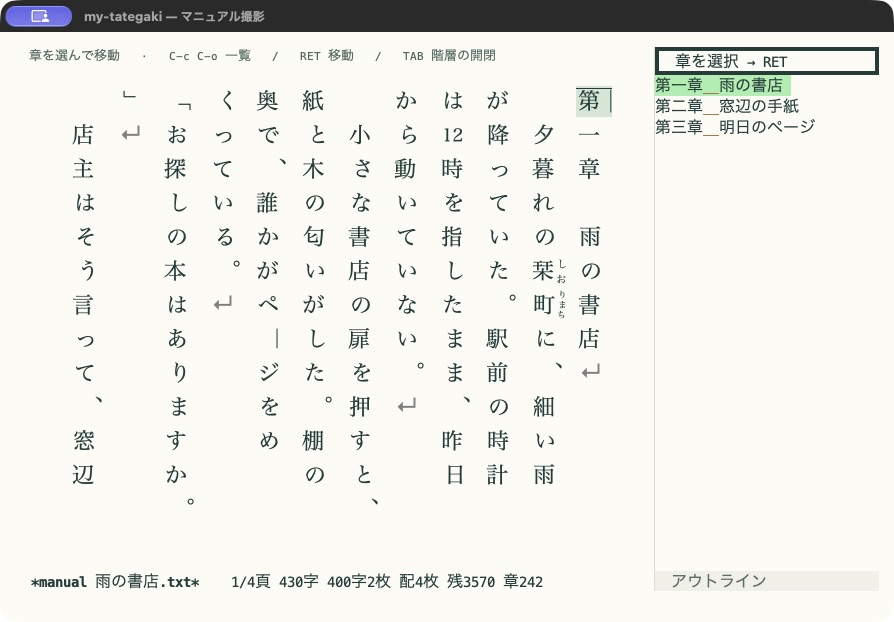
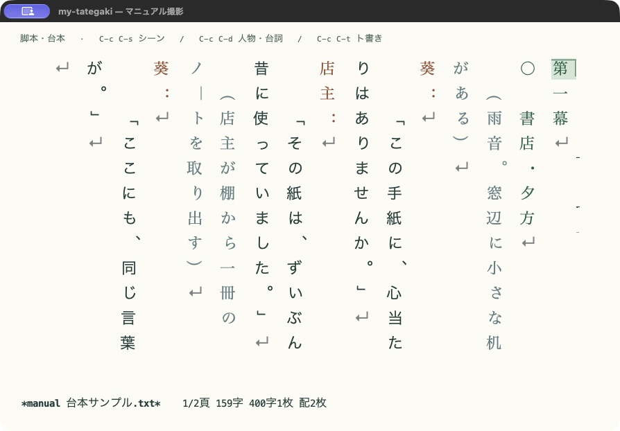

小説の段落を整え、章を行き来し、脚本の人物名・台詞・ト書きを書き分けます。どの機能も通常のテキストを編集するので、保存は C-x C-s、取り消しは C-/ です。
縦書き編集の開始・カーソル移動は 編集の基本、ルビや禁則は 組版と注記を参照してください。
小説の段落と会話文を書く
M-x tategaki-edit または M-x tategaki-typeset-edit で縦書き編集を始めると、既定では tategaki-writing-mode も有効になります。まず地の文を書き、RET で次の段落へ進んでください。全角空白が1字入ります。
段落の先頭で 「 または 『 を入力すると、会話文用の字下げへ調整します。既定の会話文は字下げなしです。空白だけの段落でさらに RET を押すと、その段落を空行として残します。C-u 2 RET でも空の区切り行を挟めます。
第一章
雨が止んだ。窓の外から、鳥の声が聞こえる。
「もう出かけられるね。」
私は傘を置き、玄関へ向かった。
駅までの道は、まだ少し濡れていた。この例の行頭の空白は実際の全角空白です。自動字下げは新しく入力した段落に作用します。ファイルを開いたとき、モードを開始したとき、文章を貼り付けたときに既存本文を一括整形することはありません。現在の段落を明示的に揃えるには M-x tategaki-writing-indent-line を実行します。
字下げ量を設定する
(setq tategaki-writing-assistance t
tategaki-writing-auto-indent t
tategaki-writing-paragraph-indent 1
tategaki-writing-dialogue-indent 0
tategaki-writing-electric-pair t)| 設定 | 意味 |
|---|---|
tategaki-writing-assistance | 縦書き開始時に執筆支援を有効にするか。既定は t。 |
tategaki-writing-auto-indent | 改行と新しく入力した会話文の自動字下げ。nil で停止。 |
tategaki-writing-paragraph-indent | 地の文の段落先頭に入れる全角空白の数。既定は1。 |
tategaki-writing-dialogue-indent | 小説の会話文に入れる全角空白の数。既定は0。 |
tategaki-writing-dialogue-openers | 会話文の開始文字。既定は 「『“‘。 |
現在のバッファで支援全体を切り替えるには M-x tategaki-writing-mode を使います。原稿ごとの設定には setq-local を使えます。既定では Org・Markdown の見出し記号や日本語の章見出しを字下げから除外します。この規則は tategaki-writing-unindented-prefix-regexp で変更できます。
括弧を補完する
括弧補完には Emacs の Electric Pair を使います。日本語用の 「」、『』、（）、［］、【】、〈〉、《》 を、このバッファだけに追加します。組み合わせは tategaki-writing-bracket-pairs で設定できます。
Smartparens などですでに括弧を補完している場合は、執筆支援を有効にする前に次を設定してください。現在有効なバッファでは tategaki-writing-mode を一度無効にしてから再度有効にします。
(setq tategaki-writing-electric-pair nil)縦書き編集から自動で有効にした支援は、縦書き終了時に解除し、変更した括弧補完設定を戻します。先に独立して有効にしていた執筆支援は残ります。通常の別バッファの設定には影響しません。
章やシーンをアウトラインで移動する


縦書き編集で C-c C-o、または M-x tategaki-outline を実行すると、見出し一覧が開きます。見出し上の RET またはクリックで本文へ移動します。本文を編集すると一覧も更新され、現在の章が強調されます。
# 第一章 雨上がり
窓を開けた。
## 駅へ
傘を置いて家を出た。
# 第二章 待ち合わせ
改札の前に、見慣れた姿があった。既定では * 見出し の Org 形式、# 見出し の Markdown 形式、第1章・第一幕・第2場 などを認識します。narrowing で編集範囲を限定している間は、その範囲の見出しだけを一覧にします。
| 目的 | 一覧内のキー／コマンド |
|---|---|
| 選んだ見出しへ移動 | RET またはクリック |
| 下位見出しの折りたたみ・展開 | TAB |
| 一覧を更新 | g |
| 一覧を閉じる | q |
| 補完で見出しを選ぶ | M-x tategaki-outline-goto-heading |
| 次／前の見出しへ移動 | M-x tategaki-outline-next-heading / tategaki-outline-previous-heading |
折りたたむのは一覧の下位見出しです。本文を隠したり、章を並べ替えたり、ページ数を変えたりする機能ではありません。一覧は読み取り専用で、本文の保存・Undoとは独立しています。
一覧の幅と認識規則
(setq tategaki-outline-width 30 ; 横幅。単位は文字桁
tategaki-outline-side 'right ; 'left も指定可能
tategaki-outline-follow-point t
tategaki-outline-heading-regexp 'auto)
;; 元バッファの outline-regexp / outline-level を使う場合
;; (setq-local tategaki-outline-heading-regexp 'outline)独自の見出しには tategaki-outline-heading-regexp に正規表現文字列を指定します。必要なら、見出し行の先頭で呼び出されて正の階層番号を返す関数を tategaki-outline-level-function に設定できます。縦書き終了時や原稿バッファを閉じた際には、対応する一覧と更新タイマーを終了します。
脚本・台本を書く


M-x tategaki-script-mode で脚本専用モードを開始します。text-mode 派生のメジャーモードで、既定では組版付きの縦書き編集と脚本用入力支援が有効になります。シーン・人物名・台詞・ト書きを、色と字下げで区別します。モード開始時に既存原稿は書き換えません。
基本の形式は、人物名と台詞を別の段落に書くものです。人物名はコロンで終え、ト書きは丸括弧で始めます。挿入コマンドは全角のコロンと括弧を使います。
第一幕
○ 居間・朝
太郎：
「おはよう。もう雨は止んだ？」
（窓を開ける）
花子：
「ええ。駅まで歩けそうね。」
○ 駅前・昼
（時計の音が聞こえる）短いシーンを作る手順
- C-c C-s を押し、シーン名に
居間・朝を入力します。○ 居間・朝と次の入力段落ができます。 - C-c C-d を押し、人物名に
太郎を入力します。人物名と台詞用の「」が入り、括弧内から書き始められます。 - 台詞の後で C-c C-t を押し、ト書きに
窓を開けるを入力します。空欄で確定すれば、空の（）の中へ移ります。 - 場面を増やしたら C-c C-o でシーン一覧を開き、移動します。
| 操作 | キー | コマンド |
|---|---|---|
| シーンを挿入 | C-c C-s | tategaki-script-scene |
| 人物名と台詞を挿入 | C-c C-d | tategaki-script-dialogue |
| ト書きを挿入 | C-c C-t | tategaki-script-stage-direction |
| 現在の段落を字下げ | TAB | tategaki-script-indent-line |
| 範囲／全文の字下げを揃える | C-c C-f | tategaki-script-format |
| 次／前のシーンへ移動 | M-n / M-p | tategaki-script-next-scene / tategaki-script-previous-scene |
人物名の段落末で RET を押すと、台詞用の字下げと 「」 を用意します。人物名の入力では同じ原稿に登場した名前を補完できます。本文で名前を入力している途中にも M-TAB / C-M-i の completion-at-point を利用できます。Corfu が有効ならその候補一覧を使います。
C-c C-f は選択範囲があればそれにかかる段落、なければ編集可能な全範囲を整形します。narrowing は尊重します。変更するのは行頭の空白で、通常の Undo で取り消せます。本文内の TAB は字下げ、アウトライン一覧内の TAB は下位見出しの開閉です。
字下げと開始時の表示を設定する
(setq tategaki-script-speaker-indent 0
tategaki-script-dialogue-indent 2
tategaki-script-stage-direction-indent 1
tategaki-script-auto-dialogue t
tategaki-script-start-vertical t)字下げの単位は全角空白の数です。横書きで始める場合は、モード開始前に tategaki-script-start-vertical を nil にします。人物名の後の括弧挿入だけを止めるなら tategaki-script-auto-dialogue、自動字下げ全体を止めるなら tategaki-writing-auto-indent を nil にします。
シーン一覧と M-x imenu は ○ / ◎、第一幕 / 第2場、Org・Markdown形式の見出しを扱います。挿入する記号は tategaki-script-scene-prefix、認識規則は tategaki-script-scene-regexp です。記法を変更する場合は両方を揃えてください。人物名とト書きの認識には tategaki-script-speaker-regexp / tategaki-script-stage-direction-regexp を使います。
色は tategaki-script-scene-face、tategaki-script-speaker-face、tategaki-script-dialogue-face、tategaki-script-stage-direction-face で調整できます。
終了方法と対応範囲
C-c C-c は縦書き表示を終了します。脚本モードと入力支援は横書きでも残ります。脚本モード自体を終了するには M-x text-mode を実行してください。.txt 全体のファイル関連付けは変更しません。
字下げは原文の段落先頭だけに入ります。長い台詞が画面の列末で折り返された先の列には、継続用の字下げを加えません。特定の放送局・劇団の提出書式や、印刷時の独立した人物名欄は未対応です。書いた原稿は Docker出力で通常のテキストとして出力できますが、脚本専用の印刷テンプレートにはなりません。
現在のメジャーモードを保ちたい場合は、M-x tategaki-writing-set-style で script を選び、tategaki-script-insert-dialogue、tategaki-script-insert-stage-direction、tategaki-script-format-region を使う方法もあります。専用モードのシーン一覧・着色・キー設定をまとめて使う場合は tategaki-script-mode を選びます。